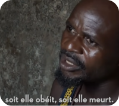
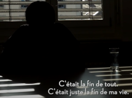

Au Nigeria, beaucoup de jeunes filles sont forcées par leur parent de partir en Europe pour rapporter de l'argent pour subvenir aux besoins de leurs familles. Au Nigeria, la parole des anciens est très importante pour un enfant, soit tu fais ce que tes parents te disent de faire soit tu es reniée de la famille.

Partir ?
Pour partir en Europe, il faut trouver un passeur qui lui possède des "contacts", les passeurs disent qu'ils vont vous trouver un travail pour aider des personnes âgées, ensuite il vous fera faire une "Cérémonie" chez un Juju, pour soi-disant une protection pour le voyage.
Une fois là-bas la jeune fille s'habille en blanc le Sorcier Juju fait un rituel durant lequel il fabrique un Grigri (une sorte de siflet) composé d'ongle et de cheveux de la jeune fille et sacrifie un poulet pour : "Donner du sang a Dieu". Une fois, le Pacte fait la jeune fille est liée à sa Mama, la mama est la personne qui se chargera d'elle une fois en Europe et à qui la jeune femme devra payer sa dette tous les mois, car si elle ne le fait pas le Juju la tuera.
Descente en Enfer
En Europe, elle appelle leur Mama pour qu'elles puissent venir la chercher les désillusions vont s'enchaîner pour ces jeunes filles, d'abord les Mama disent qu'elles doivent rembourser des frais de voyage de 45 000 à 60 000 €.
On leur dit qu'il n'existe pas de travail pour les femmes noires et que leurs seuls moyens de survie est la Prostitution sachant que certaines Mama demandent 1000 Euros par semaine, mais elle n'y arrive pas, car les tarifs sont très bas pour une prestation sexuelle aujourd'hui environ une 20 €.
"Une Ancienne Prostituée" :

Elles sont donc bloquées dans cette boucle sans avoir d'issue car si :
Elle arrête de payer ou essaye de fuir les Mama leur rappelleront leur serment et étant donné que le Nigeria est un pays très croyant le "Pacte" a beaucoup d'impact sur les jeunes filles.
Elles ne peuvent pas retourner au Nigeria car le retour est aussi dangereux que l'aller et même si elles y parviennent leur famille les reniera car elles sont revenues sans argent et donc ce serait un échec à leurs yeux.
Si elle en parle à quelqu'un, les Mama le savent car elles sont surveillées constamment et elles ne se confient à personne car elles ne parlent pas la langue et elles ont honte.
Les seules personnes à qui elles se confient, ce sont les Sœurs d'église qui viennent souvent les voir.
Les Problêmes
Le principal problème à plus long terme, c'est la demande, car c'est elle qui paye la Mafia et qui les motive à ramener d'autres femmes qui ne sont pas renseignées sur la traite des prostituées, et il est très compliqué de remonter à la source du trafic, car les Nigérianes ne parlent pas beaucoup par peur des représailles, le peu de femmes qui parle permettent d'attraper les Mama mais ce n'est pas ce qui organise le trafic. Ce sont des hommes qui tirent les ficelles et il se contente d'organiser le trafic et de toucher l'argent.
Elles sont bloquées dans cette boucle, le meilleur moyen pour s'en tirer, c'est de s'enfuir grâce à une association notamment, car beaucoup d'associations existent, mais elles n'ont pas beaucoup de fonds et sont souvent petites. Mais certaines associations arrivent à leur fournir un logement leur permettant de suivre une formation pour qu'elles puissent décrocher un contrat. Très peu réussissent à fuir cette cage et à vivre une vie normale.